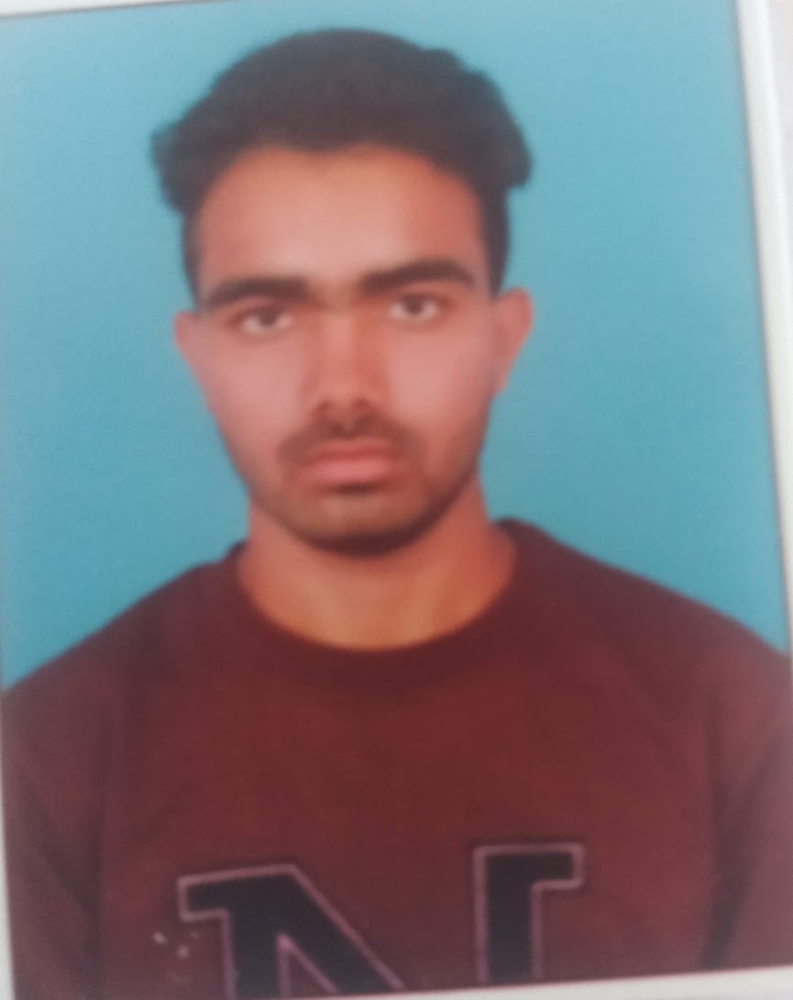

My Resume
Name:Rajender
Age:18

Summary:
- A student in CSE with an interest in AI/ML; a good web development background. The other areas of my proficiency include the operation of computers, video editing, and transcription. I look out for opportunities through which I can leverage my skills in technology and innovation.
Education:
- Bachelor of Technology (B.Tech) in Computer Science and Engineering (AI & ML Specialization)
CMR Technical Campus (CMRTC)
2024 – Present
- Intermediate (Class 12) in Science Stream
Nine Education IIT Academy
2022 – 2024
- Completed with a specialization in Physics, Chemistry, and Mathematics.
-
Schooling (Class 10)
St. Andrews School
Completed in 2022
Work Experience:
- Projects and Experience
- Personal Project
July 2024 – Present
Designed and developed a responsive portfolio website using HTML, CSS, and JavaScript.
Integrated contact forms and optimized the site for SEO.
Showcased various web development and AI/ML projects.
Skills:
-
Web Development: HTML, CSS, JavaScript, React
- AI/ML: Python, TensorFlow, PyTorch, Data Analysis
- Programming: Python, C, Java
- Tools: Git, GitHub, VS Code
- Other: Video Editing, Transcription.
AboutMe
Contact Me